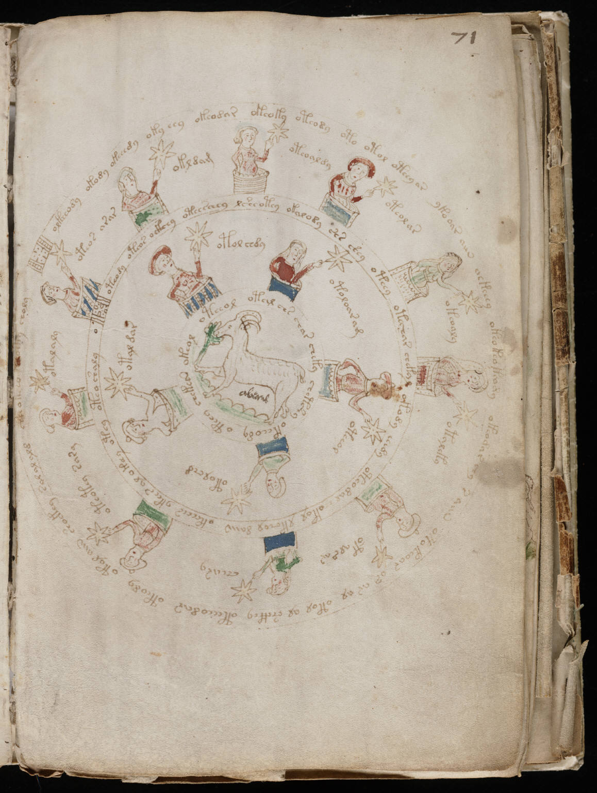

f71r
1olkeeody okody okchedy oky eey okeodar okeoky oteody oto otol oteey ar ykooar aiin aekeeey okeokeokeody okeodar chy s aiin otokeoar or ar al otol al shckhey oteeeodar oteody otol aiin shoekey sal al ald cheeokseo qorky choly2oteos arar3okldam4oteoaldy5oteolar6okeoaly7otaleky8otalsar9chsary10oteotey sary11otalaly12oteody oteos ockhey oteesaey lsheotey okalody shs shey oteey otechar chekal okody eeedy oteodal okol lkchol daiin okeeees ykees al okchy otey oteoshalyo13otol chdy14otoloaram15oteeol16otolchd17otal dar18oteeol otal chs char cheky chetshy okeeody oteey chekeen okeol
